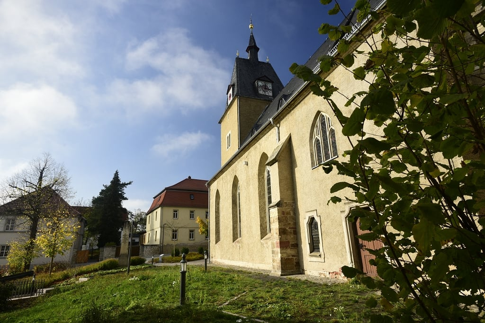
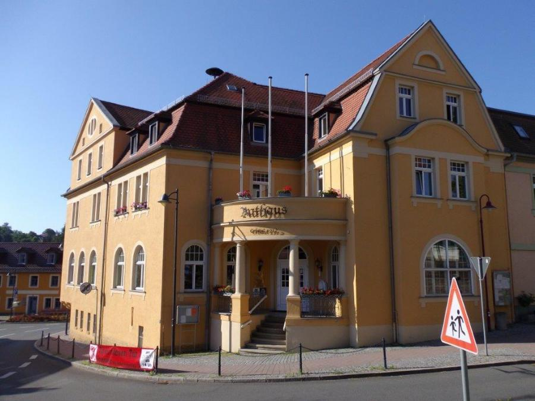
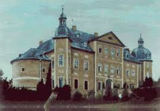
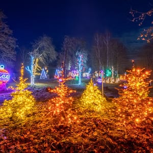
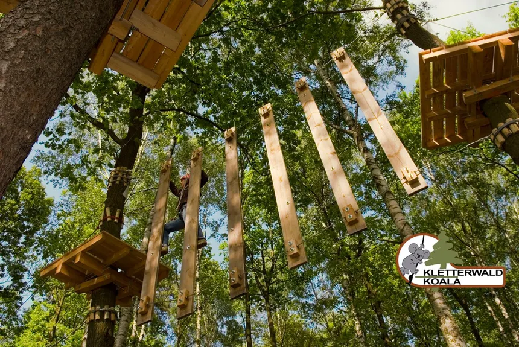
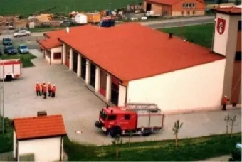
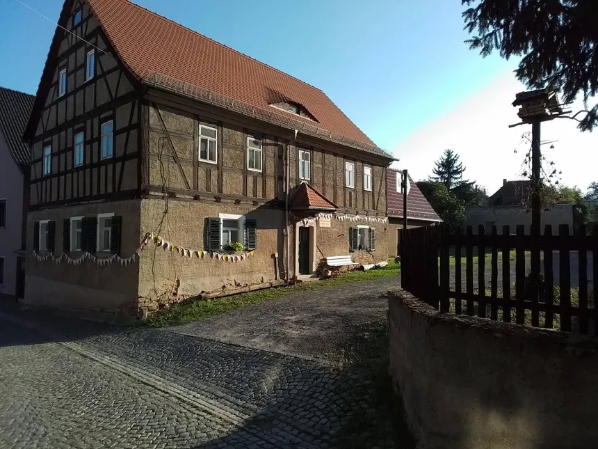
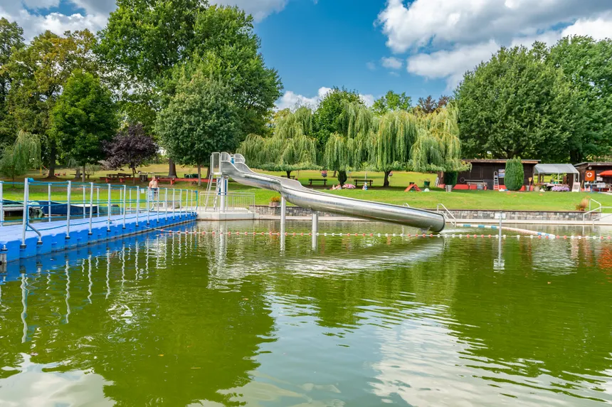

So lange dauert es
- Kleine Runde: etwa 60 Minuten
- Mit Aufgaben: etwa 2 Schulstunden
- Mit Fotos und Quiz: ein Projekttag
Eine Website für Grundschüler: Schaut euch wichtige Orte an, sammelt Entdeckerpunkte und testet euer Wissen im Quiz.
Hier könnt ihr euren Heimatort genauer kennenlernen. Die Seite zeigt bekannte Gebäude, spannende Spuren aus der Geschichte und Orte, die ihr bei einem Klassenspaziergang entdecken könnt.
Keine Ergebnisse gefunden.

Schaut genau hin: Kirchturm, Fenster und Eingang erzählen viel über alte Baukunst.

Hier werden wichtige Dinge für die Stadt besprochen und entschieden.
Ein Ort, an dem man sieht, wie Menschen früher gearbeitet und Teppiche hergestellt haben.

Ein Ort für Spurensucher: Hier erinnert noch vieles an eine frühere Burg.

Holzfiguren, Wege und Lichter machen diesen Ort besonders gut zum Beobachten.

Ein abenteuerliches Erlebnis für alle, die gerne klettern und im Freien unterwegs sind.

Hier erfahren Sie alles über die Feuerwehr in Münchenbernsdorf.

Entdecken Sie die Geschichte und Kultur von Münchenbernsdorf in unserem Heimatmuseum.

Genießen Sie unser Naturbad.
Nutzt die Liste für einen Rundgang, eine Heimatkunde-Stunde oder eine kleine Projektarbeit.
0 von 9 Sehenswürdigkeiten entdeckt.
Tipp: Markiere besuchte Orte in der Liste.
Beantworte die Fragen und sammle Punkte für deine Entdeckerklasse.
Frage 1 von 5
Datenschutzfreundlich: Die Karte wird erst nach Klick geladen.